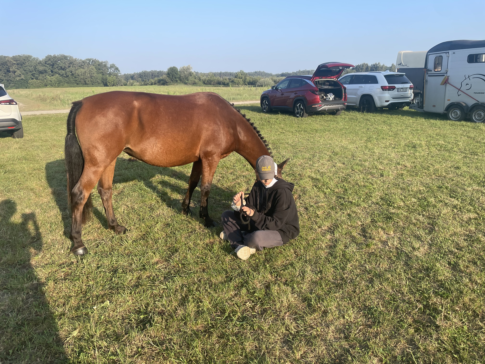
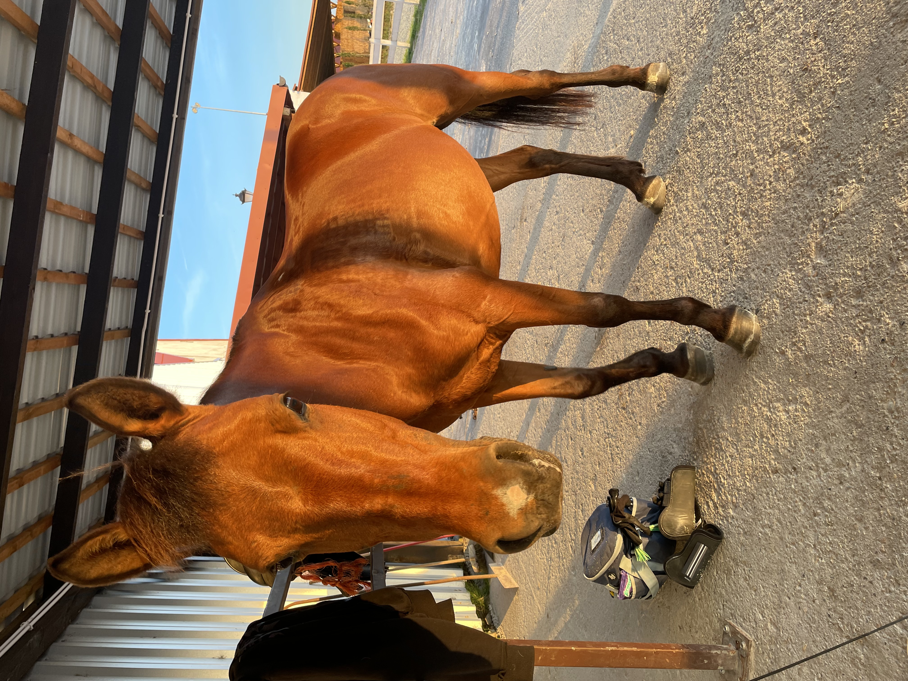
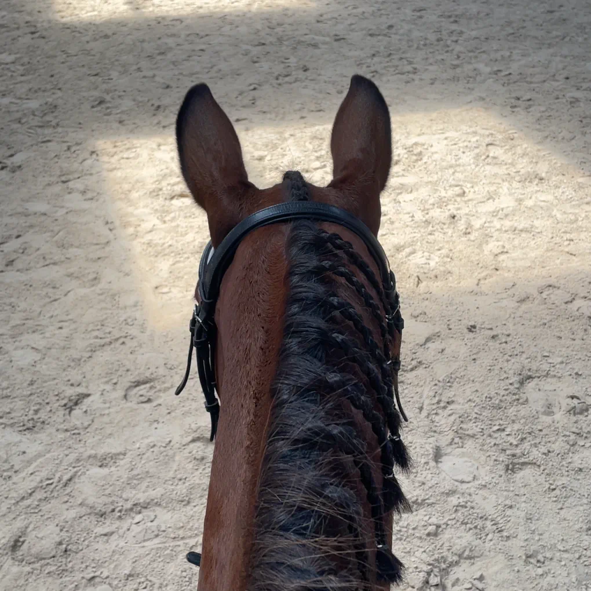
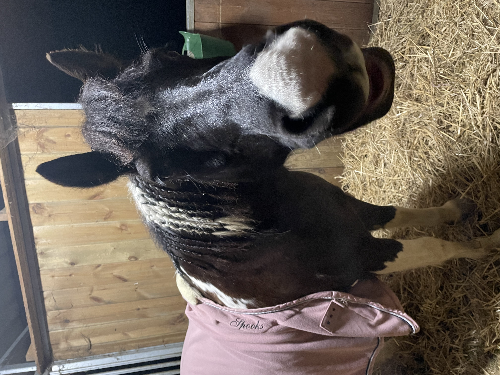
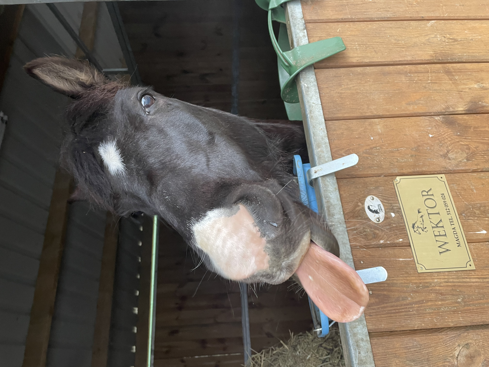
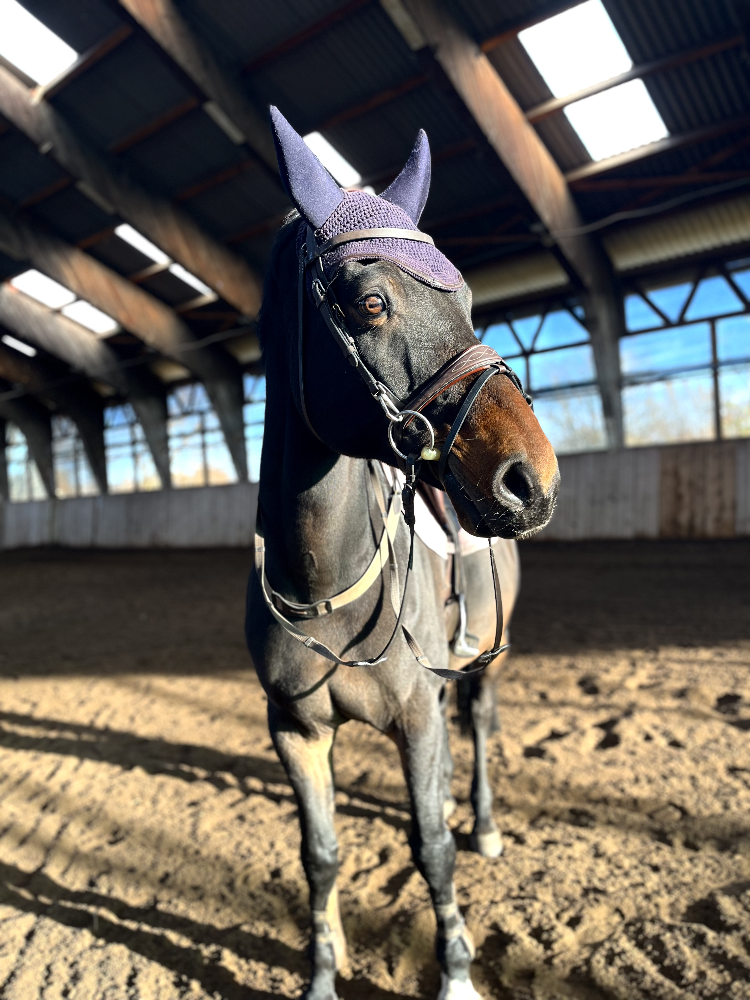
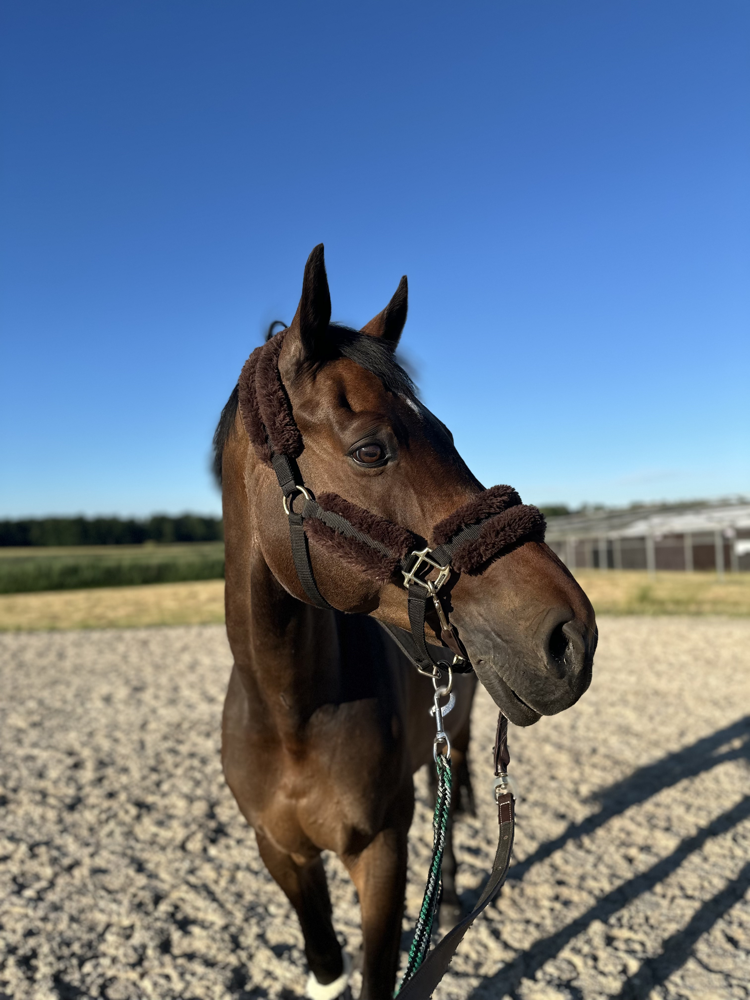
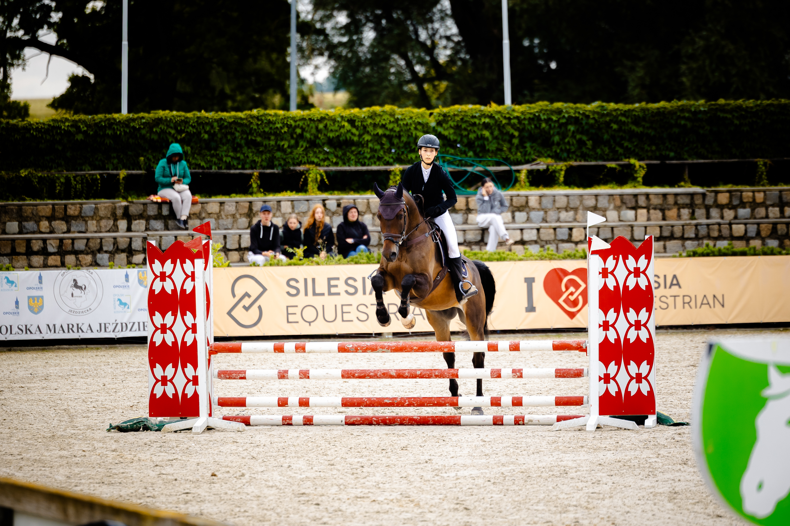

Fantazja była pierwszym koniem którego dzierżawiłam. Nauczyła mnie bardzo dużo.
Konie które mają wyjątkowe miejsce w moim sercu

Fantazja była pierwszym koniem którego dzierżawiłam. Nauczyła mnie bardzo dużo.

Jest kucem felińskim i była urodzona w 2014 roku. Jest gniadego umaszczenia z małą plamką na chrapach.

Nasza przygoda trwała od lisopada 2023 roku aż do listopada następnego roku. Bardzo dobrze wspominam ten czas.

Nasze drogi z Wektorem przecięły się w grudniu 2024 roku. Nasza przygoda nie trwała długo, bo tylko 2 miesiące.

Wektor był przyjaznym i spokojnym kucykiem, więc bardzo cieszę się z naszych wspólnie spędzonych chwil.

Z Carlasem znam się już od ponad roku i nie mam w planach kończyć naszej współpracy.

Carlas jest koniem rasy oldenburdzkiej, ma 14 lat i jest skarogniady. Jest koniem skokowym i w tej dyscyplinie wspólnie się rozwijamy.

Byliśmy już na paru zawodach skokowych i dobrze się w tym odnajdujemy. Świetnie ze sobą współgramy i myślę że nasza droga nie rozejdzie się szybko.